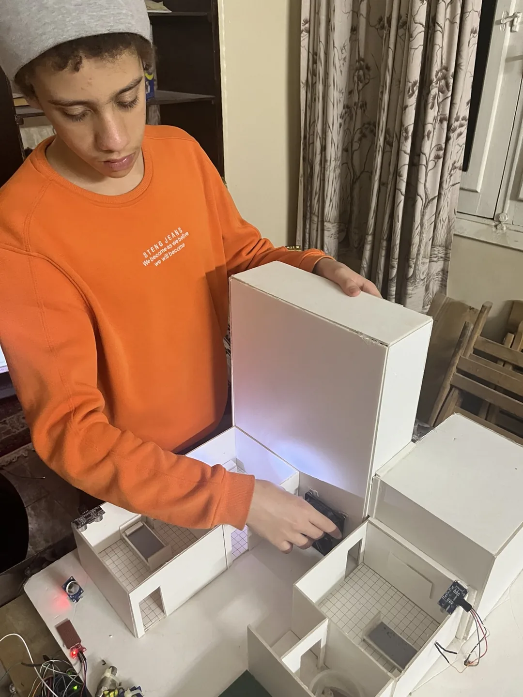
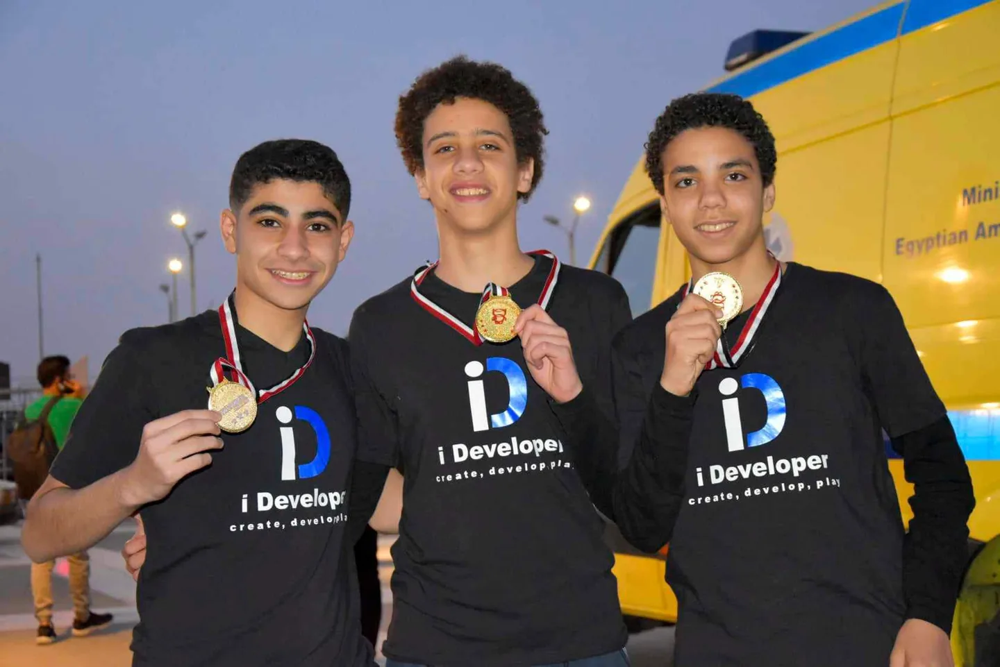

1st place · Codeavour 5.0Smart Hotel
A miniature hotel that connects water, gas, and distance sensors with Arduino code and phone commands.
The story behind the build
My team and I wired and programmed the model. We won first place in the 15+ electronics category at Codeavour 5.0 and qualified for the international round in Dubai.

The Smart Hotel team. I’m in the middle.